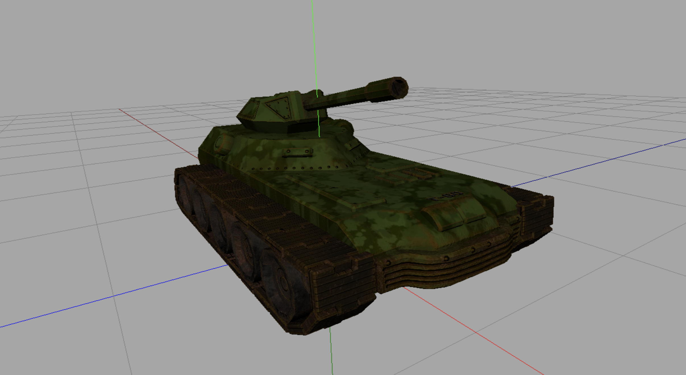
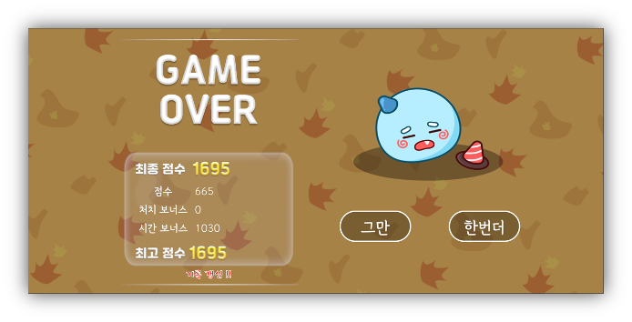
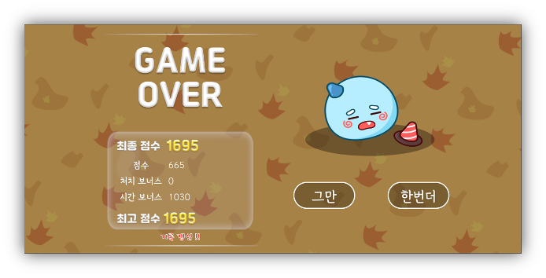

Table of Contents
- Procedurally Generated Puzzle Adventure Enhanced by Speech and Emotion AI
- WebGPU Interactive Tank
- Seoul Cheer-up
- Ppukku’s Grand Adventure: Grow Longer!
- Fate and Coincidence
- Polar Polar
- AIDA (Axie Infinity Data Analyzer)
- Mobile Robot Controller
- Cpong
- T.E.A. (Text Editor Advanced)
- Library Lobby Noise Signal Light
- Squidward the Coin Collector
1. Procedurally Generated Puzzle Adventure Enhanced by Speech and Emotion AI
- Designed and implemented PCG algorithms to generate unique and dynamic game environments, enhancing replayability.
- Utilized a Cellular Automata algorithm, Delaunay Triangulation, Minimum Spanning Trees, and A* Search Algorithm to put together a complex PCG dungeon.
- Conceptualized the game idea, integrating Procedural Content Generation (PCG) with Speech-to-Text (STT) and Speech Emotion Recognition (SER) technologies.
- Led the team, overseeing project integration and managing version control using Git to ensure seamless collaboration.
- Delivered a functional prototype showcasing dynamic content generation and interactive AI-driven features.
Screenshots:


2. WebGPU Interactive Tank
- Designed and implemented an interactive 3D tank simulation using WebGPU, showcasing advanced computer graphics techniques and real-time rendering.
- Developed core functionalities including tank movement with arrow keys, turret rotation with "A" and "D" keys, barrel elevation with "W" and "S" keys, and realistic shell shooting mechanics influenced by gravity.
- Applied comprehensive texture mapping and normal mapping techniques using multiple texture files to enhance visual realism and material properties.
- Delivered a fully functional prototype demonstrating smooth tank controls, realistic physics, and visually engaging graphics, fulfilling all assignment requirements for the computer graphics course.
Screenshots:



3. Seoul Cheer-up
- Developed a crowdsourcing platform to efficiently manage abandoned public electric scooters, addressing the issue of neglected scooters.
- Implemented core frontend features using React, ensuring a user-friendly and responsive interface.
- Proposed the central idea to create an interactive platform where citizens can easily report abandoned scooters and receive rewards.
- Introduced gamification elements to boost user participation by offering incentives and rewards.
Screenshots:


4. Ppukku’s Grand Adventure: Grow Longer!
- Designed and developed a mini-game as a Unity developer intern, officially released on Play Store and App Store.
- Implemented snake controls using a virtual joystick, allowing length adjustment by consuming ink and bean items.
- Created an algorithm utilizing cycle detection and raycasting to determine if the snake fully encircled enemies, enabling the core mechanic of surrounding and defeating foes.
Screenshots:
 



Download/Play Links:
5. Fate and Coincidence
- Collaborated in a six-member team to develop an escape room game using Unity, aiming for a December 2024 release.
- Managed all game data through Google Spreadsheet and built an event system by loading and parsing CSV files via editor functionalities.
- Developed an organic dialogue system to efficiently handle branching scenarios based on player choices.
- Implemented a cylindrical lock dial using trigonometric functions and raycasting for independent wheel rotations.
- Created a diary page drag feature by parsing the "Diary" sheet to display contents and enabling page turns through mouse dragging.
Screenshots:


6. Polar Polar
- Created a 2D platformer game as a solo project at Com2uS Mentoring School, completed in four days.
- Incorporated magnetic action elements, allowing players to choose between N-pole and S-pole to repel or attract objects.
- Developed multi-layered backgrounds with parallax effects to enhance depth perception.
- Utilized free assets from the Unity Asset Store, including tilemaps, animations, UI elements, and snow effect prefabs, to expedite development.
Screenshots:


7. AIDA (Axie Infinity Data Analyzer)
- Developed a game data analysis service for Web3 game "Axie Infinity" at SKYGG, a blockchain game community startup.
- Collected and analyzed data using the developer(Sky Mavis)'s API to provide meaningful insights for professional players.
- Built the database and web services using Python Flask, JavaScript, and MySQL, and deployed them on Google Cloud Platform.
Screenshots:


8. Mobile Robot Controller
- Developed a robot control program for navigating obstacles in disaster scenarios as a Software Engineering class project.
- Implemented the program in Python using an object-oriented approach.
- Developed the A* algorithm to calculate the shortest path avoiding danger zones and traversing exploration points.
- Integrated an STT (Speech To Text) module to allow map information modification through voice recognition, incorporating AI elements.
Screenshots:


GitHub Repository:
9. Cpong
- Remade Atari’s classic Pong game in C language for a C Programming and Practice class project.
- Enabled local 2-player multiplayer functionality.
- Developed the game using pure C language executable via Windows command line, utilizing Windows.h for system functions.
Screenshots:


Raw Code:
10. T.E.A. (Text Editor Advanced)
- Created a personal notepad application using Python.
- Added mouse-drawn drawing capabilities to allow users to create sketches within the notepad.
- Enabled various font and brush settings to customize text and drawings.
- Implemented file creation, saving, and loading functionalities for user convenience.
Screenshots:

Raw Code:
11. Library Lobby Noise Signal Light
- Developed a device to visually display noise levels in the library lobby to raise awareness.
- Programmed the device using Arduino to calculate average decibel levels every 3ms.
- Displayed noise levels using green, orange, and red indicators based on predefined thresholds.
- Implemented real-time decibel level display on a scale from 1 to 9 for immediate visual feedback.
Screenshots:


Raw Code:
12. Squidward the Coin Collector
- Remade the StarCraft 1 user map "Coin Collector Squidward" using Scratch for a high school programming club project.
- Implemented the screen movement feature not available in Scratch to enable dynamic screen transitions.
- Designed gameplay where players evade randomly moving clerk enemy to collect as many coins as possible.
Screenshots: